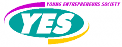

Young Entrepreneurs Society, Inc.

Website:
http://www.yes-inc.org/ Location:
Orange, MA
Helping teens and young adults in rural Western Massachusetts USA find and follow their own paths to prosperity through entrepreneurship, job readiness and financial education since 1998.
Served over 1,000 young people since inception in Massachusetts, Iowa, Alaska and Canada. Findings from over 500 BizVenture! pre- and post-program evaluations completed to date show that:
100% of our students more than doubled their overall business knowledge
85% identified a special talent they can use to earn a living
91% feel they know enough to start their own business and make a profit
95% plan to go on for more education after high-school
15% are operating a business
60% are holding a job
90% remained in or completed high school
55% performed voluntary community service
Supported Projects
CTC Outreach and Program Building
Patricia Conrad-Wexler
3/2006 — 2/2008
Goal 1: Successfully launch a regional web portal for area residents, businesses and organizations.
Goal 2: Create of a computer training and certification program at YES BizCenter
1. Regional Web portal: our Vista, Pat, and I worked with our teen web programmer, David Wiles, to complete the site’s functionality and design. The site went live in mid-September. Pat issued a press release which resulted in at least three stories and recruited two youth to staff a table at our region’s largest fall festival, which was attended by over 10,000 people. Since then, Meanwhile, Pat and several youth work continue to research, gather and enter content. We have a bevy of volunteers, including a disabled YES alumni, Alan, who works at our wheelchair desk two afternoons every week, gathering web addresses for the 975 business and organization listings in the site’s directory. In November, Pat forged a partnership with two town-specific websites (OrangeTownGreen.com and PetershamCommon.com) to collaborate on soliciting site sponsors from among the region’s business community. Our site now has 22 sponsors, who pay $225/year, which is split between YES and our partners. The funds are helping recoup some of our development costs and in future will create a revenue stream to sustain the site. The site has over 75 registered users and is growing.
2. IC3 & MOS: Pat contacted CertiPort and registered with them to become a training and certification site. She helped our TechVenture! teaching team incorporate IC3 into this 16-hour youth computer training program, which was offered last June. Pat raised over $500 in cash and in- kind contributions from local businesses towards the cost of the program. We also investigated funding through the Verizon foundation and through the state employment and training consortium. Pat also solicited in-kind contributions of computer hardware (two computers, miscellaneous parts, a network switch) and eight task chairs for our classroom. She also helped streamline the operation of our weekday Teen Cyber Cafe by having youth and adults create user accounts (sign an agreement of terms and conditions, etc.), with account settings that protect the computers from viruses, etc. There are now 125 registered users.
Community Organizing and Disability Awareness
Rayna Ramirez
6/2007 — 1/2008
The focus of Rayna’s work was to help organize a committee of people with disabilities, staff from public and non-profit agencies that serve them, and community volunteers to carry out the North Quabbin TechACCESS project (funded via CTCNet’s C4All program). Her goal was to build the capacity of the committee to make YES’ facilities, materials, programs and services more accessible and, next, to assist other community organizations and institutions to do the same. Specifically, her job was to:
1) assist with committee recruitment and operations;
2) conduct a community accessibility needs assessment;
3) organize committee training sessions and skill-development activities;
4) assist with research, purchase and installation of equipment, fixtures and technologies;
5) assist with research, preparation and production of accessible program materials;
6) promote the use of the newly-accessible facility, services and programs; and
7) document these activities and evaluate their outcomes.
Rayna assembled a volunteer committee of 12 residents, caregivers and professionals following two information sessions. With the the TechACCESS committee, Rayna conducted a needs assessment, entitled ‘Disability and Opportunity in the North Quabbin’, to identify the demographics of the disabled in our community and their needs. She organized two full days of accessibility trainings with Russ Holland of ATA for committee members and the public (‘Accessible Materials, Websites, Communication’; ‘Reaching Out & Including People with Disabilities’; ‘Accessible Facilities & Programs’; and ‘Accessible Computer Hardware & Software’). With knowledge gained from the workshops, the committee and staff worked with contractors and volunteers to remove physical barriers to YES facilities (bathroom grab bars, motion-activated light switches, lowered soap and towel dispensers, accessible sink faucets and doors handles); entryways (automatic door opener and entryway at sidewalk level); signage (neon signs, lit exit signs); classroom and cyber cafe (foldable, moveable tables and chairs); and computers (assistive hardware and software). Rayna worked with a disabled YES member to create an on-line resource directory for people with disabilities living and working in our region (including a list of businesses indicating which ones are wheelchair accessible, compiled after a telephone poll). Prior to Rayna’s early exit in January due to a medical condition, she attended an information session on the Town of Orange’s annual Community Development Block Grant program. She crafted a concept paper for the next phase of TechACCESS, which is to provide direct services beginning in mid-2008, building on the organizational capacity developed in 2007. Services include providing individualized career, educational and technological assessment, training, and support combined with and group classes to prepare up to 50 teens and young adults for economic self-sufficiency, with assistive technology playing a central role. On the strength of the concept paper, YES was invited to submit a proposal due in October and a full proposal due in November. TechACCESS-Orange was selected by the Town as its only social service project included in a $1M grant application to the MA Department of Housing and Community Development. If successful, the project will receive a $30,000 grant in early fall to support the program through December 2009. The TechACCESS committee members all wrote letters of support specifying the value of and need for the program, and continue to meet monthly.
Website Development
Stephen Wills
1/2007 —
The overall goal of the VISTA is to build our capacity to sustain and grow our services to low-income teens and adults by expanding our regional web portal serving residents, organizations and business, and developing an on-line version of the Odd Jobs Squad program that helps youth advertise their odd job services.
- Expand and sustain new regional web portal by refining design, promoting the site to area residents and organizations, and soliciting sponsorship support from business
- Design, develop, launch and sustain an on-line site that enables youth and adults to sell and buy odd jobs services that is supported by organization and business sponsors.
Related Content
None created yet!